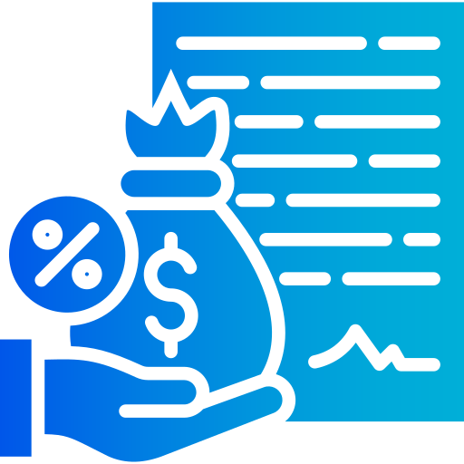
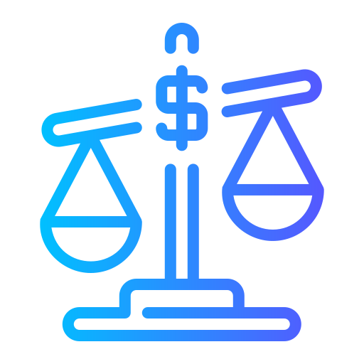
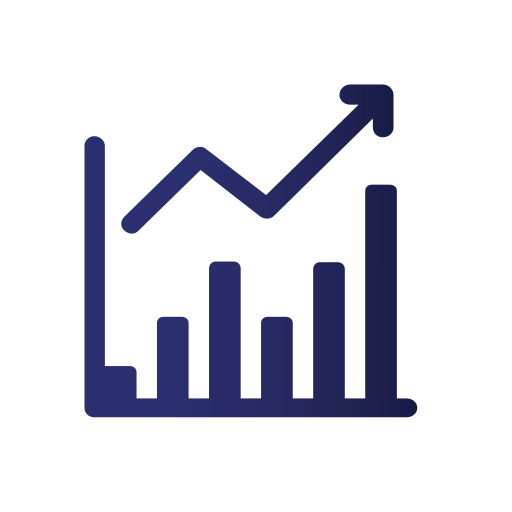

Equity Mutual Funds
Equity funds invest mainly in company shares (stocks). The goal of these funds is to help investors grow their money over the long term by investing in strong and growing businesses. They may go up and down in the short term, but they have the potential to give higher returns over time.
Benefits :
High Long-Term Returns
Equity mutual funds can generate stronger long-term growth by investing in quality businesses.
Diversification
Your money is spread across multiple sectors and companies to reduce concentration risk.
Professional Management
Experienced fund managers research and manage the portfolio based on market opportunities.

Debt Mutual Funds
Debt funds invest in government bonds, corporate bonds, and other fixed-income securities. These funds focus on providing stable and predictable returns with lower risk compared to stock investments. They are suitable for investors who prefer safer investments and steady income.
Benefits :
Stable and Predictable Returns
Debt funds focus on steady returns through fixed-income instruments like bonds.
Lower Risk
Compared to equity funds, debt funds are generally less volatile and more conservative.
Regular Income
Suitable for investors seeking periodic income with relatively stable cash flow.
Retirement Funds
Retirement funds help individuals save money for life after retirement. These funds invest for the long term and aim to provide financial security and regular income during retirement years.
Benefits
Financial Security After Retirement
Retirement funds help build a stable income after retirement and long-term security.
Long-Term Investment Growth
Regular long-term investing helps your retirement corpus grow and beat inflation.
Balanced Investment Strategy
A mix of growth and stability assets supports safer wealth creation over time.
Children Benefit Funds
Children funds help parents save and invest for their child’s future needs, such as higher education or marriage. These funds focus on long-term growth to ensure that sufficient money is available when the child grows up.
Benefits
Future Financial Planning
Build a dedicated fund for your child’s education and key life milestones.
Long-Term Wealth Creation
Long investment horizons can compound wealth significantly for future needs.
Goal-Oriented Investment
Align contributions and asset mix to match specific financial goals and timelines.

Hybrid Funds
Hybrid funds invest in a mix of stocks and bonds. This combination helps provide growth from stocks and stability from bonds, making them a good option for investors who want balanced risk and return.
Benefits
Balanced Risk and Return
Hybrid funds blend equity and debt to balance growth potential and stability.
Diversified Portfolio
Exposure to multiple asset classes helps smooth out market fluctuations.
Moderate Risk Level
Ideal for investors who want growth without taking full equity-level risk.
Tax Saving ELSS
ELSS (Equity Linked Savings Scheme) funds are tax-saving mutual funds. Investments in ELSS can help investors save income tax under Section 80C, and the investment must be kept for at least 3 years.
Benefits
Tax Benefits
ELSS investments can provide deductions under Section 80C of the Income Tax Act.
Potential for High Returns
As an equity-oriented fund, ELSS can offer strong growth over long-term holding.
Short Lock-in Period
ELSS has only a 3-year lock-in, the shortest among tax-saving instruments.
Liquid & Overnight Funds
Liquid funds invest in short-term financial instruments and are designed for very low risk and quick access to money. They are suitable for people who want to park extra money for a short period.
Benefits
High Liquidity
Liquid funds allow quick redemption, making them useful for short-term parking.
Low Investment Risk
These funds invest in high-quality short-duration instruments with lower volatility.
Better Returns Than Savings Accounts
Potentially earn better returns than idle cash while maintaining easy access.

Index / Gold / ETF Funds
Index funds and ETFs follow a specific stock market index, such as the Nifty 50 or Sensex. Instead of picking individual stocks, they simply track the performance of the index, making them low-cost and diversified investments.
Benefits
Low Cost Investment
Index and ETF funds usually have lower expense ratios than active fund options.
Market Diversification
By tracking an index, your investment is spread across a basket of securities.
Simple Investment Strategy
A passive approach makes investing straightforward and easy to track over time.